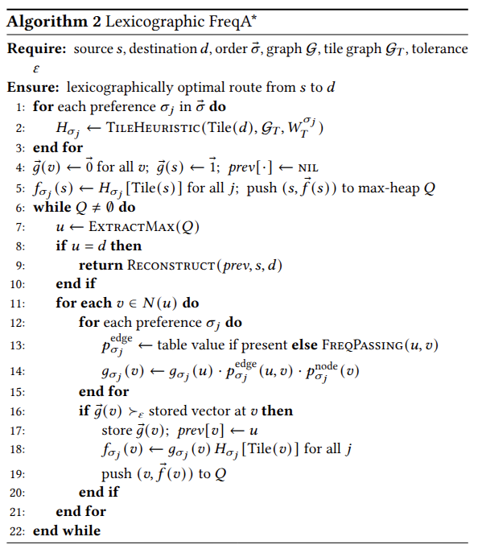

Navigation gives you a single objective and a few on/off switches.
Every major service folds distance and traffic into one
travel-time estimate, then exposes a handful of binary toggles:
avoid tollsavoid highwaysavoid ferries
You cannot ask for safer streets, fewer traffic signals, or the roads drivers actually take;
and you cannot say which matters more when they conflict.
Real people have priorities
A parent at night wants the safest route above all.
A courier wants the fastest route that still dodges congestion.
A cyclist wants to avoid signal-heavy corridors.
02
Our Insight
People express what they want as a priority order,
“safety first, then the usual way”,
far more naturally than as a vector of weights.
So we let users rank their criteria, and we return one route that
honors that ranking; never trading a higher-priority preference for a lower one.
03
Two Obstacles
Why this isn't already solved
01
The criteria aren't on the map
Safety, popularity, congestion, and signal delay live in
heterogeneous external data — crash records, trip histories, live feeds,
and map tags — each in its own units. They must be put on common ground.
02
Honor an order — fast
Prior work either collapses criteria into a weighted sum,
which can silently override the top preference, or returns a
Pareto menu that the user must choose from.
Neither gives one priority-respecting route at interactive speed.
04
System Overview
Four open data sources → one priority-ordered route
Offline: convert four urban data sources into an annotated road graph + precompute tile heuristics.
Online: the user's priority order and optional live traffic feed the search.
05
Preferences on a Common Scale
Each field steers the route away from what it penalizes
Crash exposure: clustered on a few corridors
Historical usage: follows the avenues
Signal density: dense and widespread
Every source becomes a score in (0,1].
A route score is the product of its edge and node factors along the path.
Ask for safety-first, and the search is pushed
away from crash-dense corridors; the route physically avoids the red zones.
The same holds for congestion and signals: the scoring is what makes the route
dodge what you're trying to avoid.
The fields are distinct, so different orderings give genuinely different routes.
06
Preferences on a Common Scale
Each field steers the route away from what it penalizes
Crash exposure: clustered on a few corridors
Historical usage: follows the avenues
Signal density: dense and widespread
Every source becomes a score in (0,1].
A route score is the product of its edge and node factors along the path.
Ask for safety-first, and the search is pushed
away from crash-dense corridors; the route physically avoids the red zones.
The same holds for congestion and signals: the scoring is what makes the route
dodge what you're trying to avoid.
The fields are distinct, so different orderings give genuinely different routes.
06
From Urban Data to Preference Scores
Each preference uses different edge and node factors
Preference
Edge Factor
Node Factor
Historical
\(P_{\mathrm{freq}}((u,v)\mid T_d)\)
\(1\)
Safety
\(P_{\mathrm{crash\_edge}}((u,v)\mid u)\)
\(P_{\mathrm{crash\_node}}(v)\)
Traffic
\(P_{\mathrm{traffic}}((u,v)\mid u)\)
\(P_{\mathrm{tl}}(v)\)
Edge factors describe the road segment;
node factors capture penalties at the intersection entered.
Each preference produces its own route score.
Historical, safety, and traffic scores remain separate in the lexicographic vector;
they are not multiplied together.
Compare the highest-priority preference first; ties move to the next one.
09
Depth · Why the Tolerance Exists
Why introduce the tolerance \(\varepsilon\)?
The problem
Scores are real-valued products, so two routes are
almost never exactly equal on the top preference.
Strict priority works, but lower-priority preferences rarely get a chance to act.
The fix: relative tolerance \(\varepsilon\)
Treat two scores as tied when they fall within a relative tolerance,
and let the next preference break the tie.
\(a\) and \(b\) are two candidate scores on the current preference.
\(\varepsilon=0\) recovers strict priority. A small \(\varepsilon\) lets lower preferences act on near-ties
without overturning a clear winner.
10
The Method · Lexicographic FreqA*
Two ideas: a priority-ordered search, made fast
1 · Lexicographic search
Each route carries a score vector; one component per preference.
Compare on the top preference first; break near-ties within \(\varepsilon\) by the next.
Priorities never multiply, so a lower one cannot overrule a higher one.
2 · Tile-graph heuristic
A coarse tile grid gives an optimistic estimate of the best score to the destination;
an admissible A* heuristic that focuses the search. This is where the 80% node reduction comes from.
The road graph coarsened to a tile graph; heuristic precomputed once per destination,
reused for any ordering.
Provably lexicographically optimal at \(\varepsilon=0\)(proofs in paper).
11
Algorithm · Lexicographic FreqA*
How the priority-aware search works

Score accumulation
\(\vec g(v)\) stores the accumulated
preference-score vector from \(s\) to \(v\).
Tile heuristic
\(\vec h(v)\) gives an optimistic estimate of the remaining preference scores.
\[
\vec f(v)=\vec g(v)\odot\vec h(v)
\]
\(\varepsilon\)-lex relaxation
OPEN uses a strict lexicographic order;
\(\varepsilon\) is applied when deciding whether a newly reached vector improves the stored one.
\(\odot\) denotes component-wise multiplication. The search maximizes preference scores.
12
Result 1 · The Order Matters
Different priorities → materially different routes
Safety: crashes per route
Popularity: popular segments
Offline traffic: signals per route
Live traffic: live congestion
Same O–D pair under three offline preference-first routes and one live-traffic route.
The three offline routes are almost edge-disjoint
(pairwise overlap ≤ 2.6%).
The order is not a re-weighting; it produces a fundamentally different route.
13
Result 2 · Fast and Optimal
Interactive speed, zero quality loss
0.42 ms
FreqA* query single preference
80%
fewer node expansions
100%
FreqScore matches optimum
A 97.8× speedup over the same-objective baseline
while matching the provably optimal route on every one of 197 queries.
Method
Nodes
Time
Dijkstra
2348.8
4.07
A*
741.3
2.07
FreqDijkstra
1249.1
41.0
FreqA* (ours)
249.6
0.42
Lex-FreqA* (ours)
249.3
1.13
256×256 grid, 197 queries. Time in ms.
14
Result 3 · Live Traffic
The same query reroutes as congestion shifts
Traffic-first query at two times using the TomTom live feed.
Routes keep to free-flowing edges and avoid congested corridors; re-evaluated live, not cached.
Per-query search stays at 2.2 ms.
15
Result 4 · The Cost of Preference
Honoring a preference has a price and a knob
Preference-first routes are longer than the shortest path;
a real, interpretable cost, not inefficiency.
Route
vs shortest
Historical-first
+20.3%
Safety-first
+60.1%
Traffic-first
+63.5%
Optional distance budget
Cap the detour at \(\beta\) × shortest path. One feasibility check, no change to the search.
\(\beta\)
Detour
Safety
∞
+62.0%
100.0%
2.0
+40.5%
85.3%
1.5
+24.4%
63.4%
1.25
+13.0%
52.4%
\(\beta=2.0\) nearly halves the detour while keeping 85.3% of the safety score.
16
Scope & Honesty
What we claim and what we don't
Synthetic historical corpus.
Popularity is a stand-in; quality is measured against our own field, not real driver choices.
Real trajectories drop in without changing the search.
Crash exposure, not per-vehicle risk.
Counts are not traffic-normalized, so the safety detour is likely an upper bound.
One city, bounded priority.
Manhattan's grid; strict priority at \(\varepsilon=0\), bounded at the operating tolerance.
Crucially: none of this touches the search guarantees or the efficiency results,
which hold for any preference field.
17
Takeaway
Users should be able to say
“safest, then fastest”
and receive one route that respects that priority,
rather than a weighted compromise or a menu of alternatives.
Priority-aware
Higher-priority preferences cannot be overridden by lower ones.
Efficient
An admissible tile heuristic makes preference-aware search practical.
Live-adaptive
The same framework responds directly to changing traffic conditions.


.webp)
.webp)
.webp)

_page-0001.jpg)
_page-0001.jpg)
_page-0001.jpg)
_page-0001.jpg)